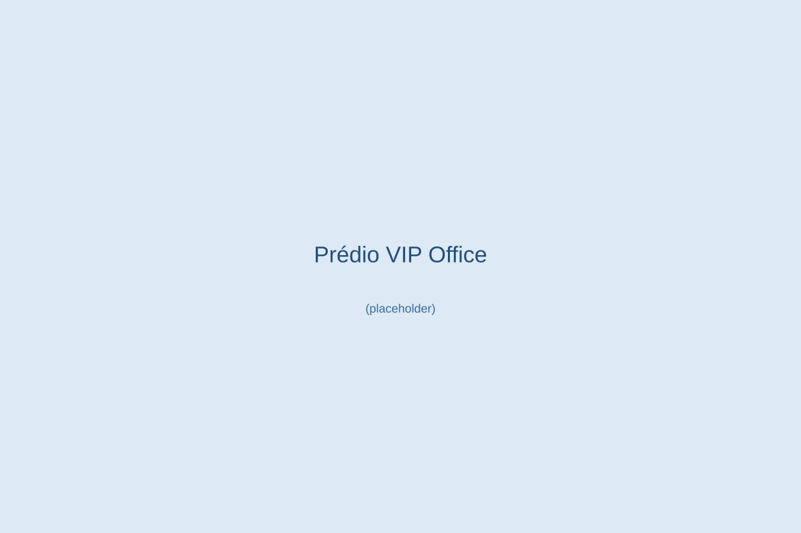

VIP Office BPO para Call Center
Seu call center pronto para operar.
Espaços ergonômicos, infraestrutura de TI redundante e suporte 24/7 para manter sua operação ativa.
Fale conoscoInfraestrutura para BPOVocê cuida da estratégia.
Você cuida da estratégia.
Nós cuidamos da estrutura
Espaços ergonômicos
Posições de trabalho em conformidade com NR17.
Redundância
Gerador e nobreak para continuidade 24/7.
Segurança
Controle de acesso e monitoramento.
A estrutura do seu dia a dia
Uma operação de call center com espaço e tecnologia.
NR 17posições ergonômicas
24/7continuidade com gerador e nobreak
Suportemonitoramento e TI dedicado

Localização estratégica
Prédio com fácil acesso e infraestrutura para equipes.
Vamos conversar
Conte-nos sobre a sua operação de call center
Envie detalhes do seu projeto e agendamos uma visita técnica.